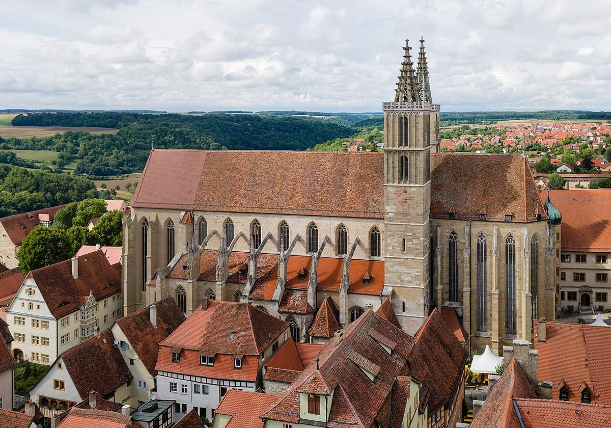

Descubre la magia de Rothenburg ob der Tauber: la joya medieval de Alemania

Rothenburg ob der Tauber es uno de esos lugares que parece sacado de un cuento de hadas. Con sus calles empedradas, casas de entramado de madera y una muralla medieval casi intacta, esta ciudad en Baviera es una visita obligada para cualquier amante de la historia, la arquitectura y los paisajes pintorescos. En este artículo, te llevamos a descubrir lo mejor de Rothenburg ob der Tauber, desde cómo llegar hasta los lugares que no te puedes perder.
¿Cómo llegar a Rothenburg ob der Tauber?
Rothenburg ob der Tauber está situada en el estado de Baviera, al sur de Alemania. Si vienes desde ciudades cercanas como Nuremberg o Würzburg, lo más recomendable es llegar en tren o en coche. El tren es una opción cómoda y económica, especialmente si tienes un pase de transporte regional. Si prefieres conducir, disfrutarás de un viaje lleno de paisajes espectaculares. Desde Frankfurt, por ejemplo, el trayecto en coche toma alrededor de dos horas y media.
¿Cuál es la mejor época para visitar?
Rothenburg ob der Tauber es hermosa en cualquier época del año, pero si quieres evitar las multitudes y disfrutar de un clima agradable, la primavera y el otoño son ideales. Durante el invierno, la ciudad se transforma en un verdadero escenario navideño gracias a su famoso mercado de Navidad, el 'Reiterlesmarkt'. Si visitas en verano, prepárate para compartir la ciudad con más turistas, pero también para disfrutar de días más largos y soleados.
Los imprescindibles de Rothenburg ob der Tauber
Rothenburg ob der Tauber tiene tanto que ofrecer que puede ser difícil elegir por dónde empezar. Aquí te dejamos algunos de los lugares que no te puedes perder:
1. La muralla medieval
Una de las características más icónicas de la ciudad es su muralla medieval, que se conserva en excelente estado. Puedes caminar por encima de ella y disfrutar de vistas panorámicas de la ciudad y sus alrededores. Es un paseo relajante y una forma única de transportarte en el tiempo.
2. La Plaza del Mercado (Marktplatz)
El corazón de Rothenburg ob der Tauber es su Plaza del Mercado. Aquí encontrarás algunos de los edificios más emblemáticos, como el Ayuntamiento y la Fuente de San Jorge. Es un lugar perfecto para tomar fotos, descansar en una terraza o disfrutar de eventos locales.
3. El Museo de la Ciudad (Reichsstadtmuseum)
Si quieres profundizar en la historia de Rothenburg ob der Tauber, el Museo de la Ciudad es una parada obligada. Ubicado en un antiguo convento, el museo alberga una colección fascinante de arte, documentos históricos y objetos que cuentan la rica historia de la ciudad.
4. El Museo de los Criminales Medievales (Mittelalterliches Kriminalmuseum)
Este museo es una visita peculiar pero muy interesante. Aquí podrás aprender sobre las leyes, los castigos y los métodos de tortura utilizados durante la Edad Media. Es una experiencia que te hará apreciar aún más los avances de la sociedad moderna.
5. El Puente doble sobre el río Tauber
Para disfrutar de una vista impresionante de la ciudad, dirígete al Puente doble sobre el río Tauber. Desde aquí, podrás tomar fotos espectaculares de Rothenburg ob der Tauber con sus techos rojos y su muralla imponente como telón de fondo.
Dónde comer en Rothenburg ob der Tauber
No puedes visitar Rothenburg ob der Tauber sin probar algunas delicias bávaras. Aquí te dejamos algunas recomendaciones:
Plätzle
Este pequeño restaurante es conocido por sus platos tradicionales bávaros, como las albóndigas (Königsberger Klopse) y el cerdo asado (Schweinebraten). Es un lugar acogedor con un ambiente auténtico.
Café Einzigartig
Si buscas un lugar para tomar un descanso y disfrutar de un buen café o un postre, este café es una excelente opción. Prueba su tarta de manzana o su famoso 'Schneeballen', un dulce tradicional de la región.
Zur Höll
Ubicado en uno de los edificios más antiguos de la ciudad, este restaurante ofrece una experiencia gastronómica única. Aquí podrás disfrutar de platos típicos bávaros en un ambiente histórico y lleno de encanto.
Conclusión
Rothenburg ob der Tauber es una ciudad que parece detenida en el tiempo, pero que ofrece una experiencia moderna y completa para sus visitantes. Ya sea que vengas por su historia, su arquitectura o simplemente para disfrutar de un paseo tranquilo, esta joya medieval te dejará con recuerdos inolvidables. ¡No olvides llevar tu cámara y explorar cada rincón de esta maravillosa ciudad!
Haiktec
- 7 Estrategias Inteligentes para Ahorrar en Casa: Guía Práctica para Hombre
- Planificador de Ingresos y Gastos para Creadores de Contenido
- El Maestro Eficiente: 7 estrategias sencillas para optimizar tu tiempo y mejorar tus clases
Text mit KI erstellt und automatisch geprueft.